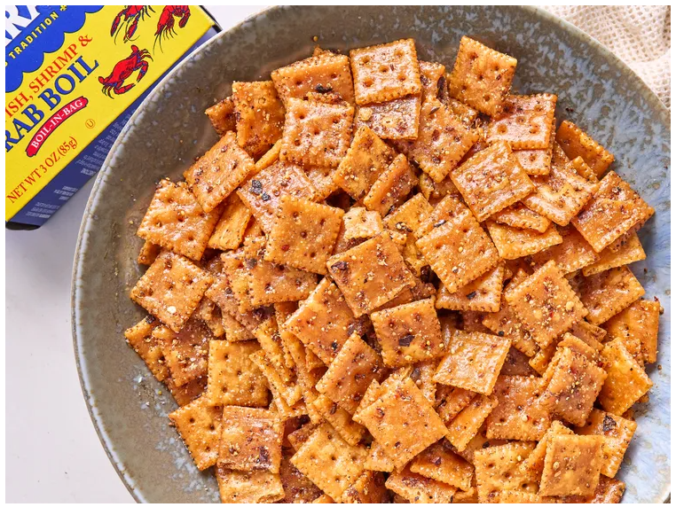

Odin Recipes
Seafood Boil Crackers

Description
Seafood Boil Crackers are a flavorful snack inspired by Southern seafood boils, especially popular in places like
Louisiana. These crackers capture the bold taste of Cajun spices, garlic, and butter, offering the essence of a
coastal feast in every bite-sized crunch. Originally a creative twist on traditional oyster crackers, they bring
the spirit of seafood boils into a shelf-stable, addictive snack.
Perfect for parties, road trips, or casual snacking, Seafood Boil Crackers are loved for their spicy, buttery
kick. They pair well with dips, soups, or can be enjoyed on their own. Their crunchy texture and zesty flavor
make them a go-to for anyone craving bold Southern flavors in a convenient, everyday form.
Ingredients
- 1 cup canola oil
- 2 tablespoons butter, melted
- 1 tablespoon paprika
- 1 teaspoon garlic powder
- 1 teaspoon onion powder
- 1 teaspoon red pepper flakes
- 1 tablespoon crab boil seasoning
- 1 (11 ounce) box mini saltines
Steps
- Preheat the oven to 250 degrees F (120 degrees C).
- Whisk together oil, butter, paprika, garlic powder, onion powder, red pepper flakes, and crab boil seasoning in a bowl.
- Pour mixture into a 1-gallon resealable plastic bag and add saltines. Shake until saltines are completely coated. Evenly spread crackers onto a rimmed baking sheet.
- Bake in the preheated oven for 30 minutes, stirring once midway through. Allow crackers to cool before serving.
Home